깊은신경망(3)– 신경망의표현, 시벤코정리증명, CPU vs GPU, 확률적경사하강법(+배치,에폭의 개념), 오버피팅
강의영상
https://youtube.com/playlist?list=PLQqh36zP38-zXzWcQw8KYaSDuBOrEp7AA
imports
신경망의 표현 (\({\boldsymbol x} \to \hat{\boldsymbol y}\) 로 가는 과정을 그림으로 표현)
예제1: \(\underset{(n,1)}{\bf X} \overset{l_1}{\to} \underset{(n,1)}{\boldsymbol u^{(1)}} \overset{sig}{\to} \underset{(n,1)}{\boldsymbol v^{(1)}} =\underset{(n,1)}{\hat{\boldsymbol y}}\)
- 모든 observation과 가중치를 명시한 버전
(표현1)
Code
gv('''
"1" -> "ŵ₀ + xₙ*ŵ₁, bias=False"[label="* ŵ₀"]
"xₙ" -> "ŵ₀ + xₙ*ŵ₁, bias=False"[label="* ŵ₁"]
"ŵ₀ + xₙ*ŵ₁, bias=False" -> "ŷₙ"[label="sigmoid"]
"." -> "...................................."[label="* ŵ₀"]
".." -> "...................................."[label="* ŵ₁"]
"...................................." -> "..."[label=" "]
"1 " -> "ŵ₀ + x₂*ŵ₁, bias=False"[label="* ŵ₀"]
"x₂" -> "ŵ₀ + x₂*ŵ₁, bias=False"[label="* ŵ₁"]
"ŵ₀ + x₂*ŵ₁, bias=False" -> "ŷ₂"[label="sigmoid"]
"1 " -> "ŵ₀ + x₁*ŵ₁, bias=False"[label="* ŵ₀"]
"x₁" -> "ŵ₀ + x₁*ŵ₁, bias=False"[label="* ŵ₁"]
"ŵ₀ + x₁*ŵ₁, bias=False" -> "ŷ₁"[label="sigmoid"]
''')
- 단점: 똑같은 그림의 반복이 너무 많음
- observation 반복을 생략한 버전들
(표현2) 모든 \(i\)에 대하여 아래의 그림을 반복한다고 하면 (표현1)과 같다.
Code

(표현3) 그런데 (표현2)에서 아래와 같이 \(x_i\), \(y_i\) 대신에 간단히 \(x\), \(y\)로 쓰는 경우도 많음
Code

- 1을 생략한 버전들
(표현4) bais=False 대신에 bias=True를 주면 1을 생략할 수 있음
Code
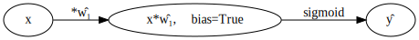
(표현4의 수정) \(\hat{w}_1\)대신에 \(\hat{w}\)를 쓰는 것이 더 자연스러움

(표현5) 선형변환의 결과는 아래와 같이 \(u\)로 표현하기도 한다.
다이어그램은 그리는 사람의 취향에 따라 그리는 방법이 조금씩 다릅니다. 즉 교재마다 달라요.
예제2: \(\underset{(n,1)}{\bf X} \overset{l_1}{\to} \underset{(n,2)}{\boldsymbol u^{(1)}} \overset{relu}{\to} \underset{(n,2)}{\boldsymbol v^{(1)}} \overset{l_2}{\to} \underset{(n,1)}{\boldsymbol u^{(2)}} \overset{sig}{\to} \underset{(n,1)}{\boldsymbol v^{(2)}} =\underset{(n,1)}{\hat{\boldsymbol y}}\)
참고: 코드로 표현
torch.nn.Sequential(
torch.nn.Linear(in_features=1,out_features=2),
torch.nn.ReLU(),
torch.nn.Linear(in_features=2,out_features=1),
torch.nn.Sigmoid()
)- 이해를 위해서 10월4일 강의노트에서 다루었던 아래의 상황을 고려하자.

(강의노트의 표현)
Code

(좀 더 일반화된 표현) 10월4일 강의노트 상황을 일반화하면 아래와 같다.
Code

* Layer의 개념: \({\bf X}\)에서 \(\hat{\boldsymbol y}\)로 가는 과정은 “선형변환+비선형변환”이 반복되는 구조이다. “선형변환+비선형변환”을 하나의 세트로 보면 아래와 같이 표현할 수 있다.
\(\underset{(n,1)}{\bf X} \overset{l_1}{\to} \left( \underset{(n,2)}{\boldsymbol u^{(1)}} \overset{relu}{\to} \underset{(n,2)}{\boldsymbol v^{(1)}} \right) \overset{l_2}{\to} \left(\underset{(n,1)}{\boldsymbol u^{(2)}} \overset{sig}{\to} \underset{(n,1)}{\boldsymbol v^{(2)}}\right), \quad \underset{(n,1)}{\boldsymbol v^{(2)}}=\underset{(n,1)}{net({\bf X})}=\underset{(n,1)}{\hat{\boldsymbol y}}\)
이것을 다이어그램으로 표현한다면 아래와 같다.
(선형+비선형을 하나의 Layer로 묶은 표현)
Code
gv('''
subgraph cluster_1{
style=filled;
color=lightgrey;
"X"
label = "Layer 0"
}
subgraph cluster_2{
style=filled;
color=lightgrey;
"X" -> "u1[:,0]"
"X" -> "u1[:,1]"
"u1[:,0]" -> "v1[:,0]"[label="relu"]
"u1[:,1]" -> "v1[:,1]"[label="relu"]
label = "Layer 1"
}
subgraph cluster_3{
style=filled;
color=lightgrey;
"v1[:,0]" -> "u2"
"v1[:,1]" -> "u2"
"u2" -> "v2=yhat"[label="sigmoid"]
label = "Layer 2"
}
''')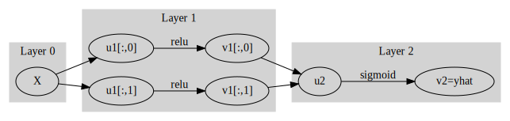
Layer를 세는 방법
- 정석: 학습가능한 파라메터가 몇층으로 있는지…
- 일부 교재 설명: 입력층은 계산하지 않음, activation layer는 계산하지 않음.
- 위의 예제의 경우
number of layer = 2이다.
사실 input layer, activation layer 등의 표현을 자주 사용해서 layer를 세는 방법이 처음에는 헷갈립니다..
Hidden Layer의 수를 세는 방법
Layer의 수 = Hidden Layer의 수 + 출력층의 수 = Hidden Layer의 수 + 1- 위의 예제의 경우
number of hidden layer = 1이다.
* node의 개념: \(u\to v\)로 가는 쌍을 간단히 노드라는 개념을 이용하여 나타낼 수 있음.
(노드의 개념이 포함된 그림)
Code
gv('''
subgraph cluster_1{
style=filled;
color=lightgrey;
"X"
label = "Layer 0"
}
subgraph cluster_2{
style=filled;
color=lightgrey;
"X" -> "node1"
"X" -> "node2"
label = "Layer 1:relu"
}
subgraph cluster_3{
style=filled;
color=lightgrey;
"node1" -> "yhat "
"node2" -> "yhat "
label = "Layer 2:sigmoid"
}
''')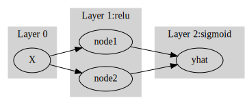
여기에서 node의 숫자 = feature의 숫자와 같이 이해할 수 있다. 즉 아래와 같이 이해할 수 있다.
(“number of nodes = number of features”로 이해한 그림)
Code
gv('''
subgraph cluster_1{
style=filled;
color=lightgrey;
"X"
label = "Layer 0"
}
subgraph cluster_2{
style=filled;
color=lightgrey;
"X" -> "feature1"
"X" -> "feature2"
label = "Layer 1:relu"
}
subgraph cluster_3{
style=filled;
color=lightgrey;
"feature1" -> "yhat "
"feature2" -> "yhat "
label = "Layer 2:sigmoid"
}
''')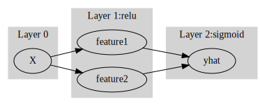
다이어그램의 표현방식은 교재마다 달라서 모든 예시를 달달 외울 필요는 없습니다. 다만 임의의 다이어그램을 보고 대응하는 네트워크를 pytorch로 구현하는 능력은 매우 중요합니다.
예제3: \(\underset{(n,784)}{\bf X} \overset{l_1}{\to} \underset{(n,32)}{\boldsymbol u^{(1)}} \overset{relu}{\to} \underset{(n,32)}{\boldsymbol v^{(1)}} \overset{l_1}{\to} \underset{(n,1)}{\boldsymbol u^{(2)}} \overset{sig}{\to} \underset{(n,1)}{\boldsymbol v^{(2)}}=\underset{(n,1)}{\hat{\boldsymbol y}}\)
(다이어그램표현)
Code
gv('''
splines=line
subgraph cluster_1{
style=filled;
color=lightgrey;
"x1"
"x2"
".."
"x784"
label = "Input Layer"
}
subgraph cluster_2{
style=filled;
color=lightgrey;
"x1" -> "node1"
"x2" -> "node1"
".." -> "node1"
"x784" -> "node1"
"x1" -> "node2"
"x2" -> "node2"
".." -> "node2"
"x784" -> "node2"
"x1" -> "..."
"x2" -> "..."
".." -> "..."
"x784" -> "..."
"x1" -> "node32"
"x2" -> "node32"
".." -> "node32"
"x784" -> "node32"
label = "Hidden Layer: relu"
}
subgraph cluster_3{
style=filled;
color=lightgrey;
"node1" -> "yhat"
"node2" -> "yhat"
"..." -> "yhat"
"node32" -> "yhat"
label = "Outplut Layer: sigmoid"
}
''')
- Layer0,1,2 대신에 Input Layer, Hidden Layer, Output Layer로 표현함
- 위의 다이어그램에 대응하는 코드
시벤코정리가 성립하는 이유? (엄밀한 증명 X)
그림으로 보는 증명과정
- 데이터
- 아래와 같은 네트워크를 고려하자.
- 직관1: \(l_1\),\(l_2\)의 가중치를 잘 결합하다보면 우연히 아래와 같이 만들 수 있다.
fig,ax = plt.subplots(1,3,figsize=(9,3))
ax[0].plot(x,l1(x).data); ax[0].set_title('$l_1(x)$')
ax[1].plot(x,a1(l1(x)).data); ax[1].set_title('$(a_1 \circ l_1)(x)$')
ax[2].plot(x,l2(a1(l1(x))).data,color='C2'); ax[2].set_title('$(l_2 \circ a_1 \circ \l_1)(x)$')Text(0.5, 1.0, '$(l_2 \\circ a_1 \\circ \\l_1)(x)$')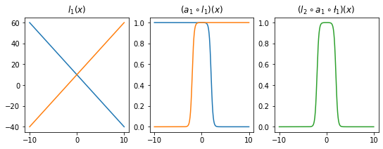
- 직관2: 아래들도 가능할듯?
l1.weight.data = torch.tensor([[-5.00],[5.00]])
l1.bias.data = torch.tensor([+0.00,+20.00])
l2.weight.data = torch.tensor([[1.00,1.00]])
l2.bias.data = torch.tensor([-1.00])
fig,ax = plt.subplots(1,3,figsize=(9,3))
ax[0].plot(x,l1(x).data,'--',color='C0'); ax[0].set_title('$l_1(x)$')
ax[1].plot(x,a1(l1(x)).data,'--',color='C0'); ax[1].set_title('$(a_1 \circ l_1)(x)$')
ax[2].plot(x,l2(a1(l1(x))).data,'--',color='C0'); ax[2].set_title('$(l_2 \circ a_1 \circ \l_1)(x)$');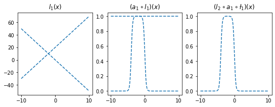
l1.weight.data = torch.tensor([[-5.00],[5.00]])
l1.bias.data = torch.tensor([+20.00,+0.00])
l2.weight.data = torch.tensor([[2.50,2.50]])
l2.bias.data = torch.tensor([-2.50])
ax[0].plot(x,l1(x).data,'--',color='C1'); ax[0].set_title('$l_1(x)$')
ax[1].plot(x,a1(l1(x)).data,'--',color='C1'); ax[1].set_title('$(a_1 \circ l_1)(x)$')
ax[2].plot(x,l2(a1(l1(x))).data,'--',color='C1'); ax[2].set_title('$(l_2 \circ a_1 \circ \l_1)(x)$');
fig
- 은닉층의노드수=4로 하고 적당한 가중치를 조정하면 \((l_2\circ a_1 \circ l_1)(x)\)의 결과로 주황색선 + 파란색선도 가능할 것 같다. \(\to\) 실제로 가능함
- 2개의 시그모이드를 우연히 잘 결합하면 아래와 같은 함수 \(h\)를 만들 수 있다.
- 위와 같은 함수 \(h\)를 활성화함수로 하고 \(m\)개의 노드를 가지는 은닉층을 생각해보자. 이러한 은닉층을 사용한다면 전체 네트워크를 아래와 같이 표현할 수 있다.
\(\underset{(n,1)}{\bf X} \overset{l_1}{\to} \underset{(n,m)}{\boldsymbol u^{(1)}} \overset{h}{\to} \underset{(n,m)}{\boldsymbol v^{(1)}} \overset{l_2}{\to} \underset{(n,1)}{\hat{\boldsymbol y}}\)
그리고 위의 네트워크와 동일한 효과를 주는 아래의 네트워크가 항상 존재함.
\(\underset{(n,1)}{\bf X} \overset{l_1}{\to} \underset{(n,2m)}{\boldsymbol u^{(1)}} \overset{sig}{\to} \underset{(n,2m)}{\boldsymbol v^{(1)}} \overset{l_2}{\to} \underset{(n,1)}{\hat{\boldsymbol y}}\)
- \(h(x)\)를 활성화함수로 가지는 네트워크를 설계하여 보자.
히든레이어가 1개의 노드를 가지는 경우
torch.manual_seed(43052)
fig, ax = plt.subplots(4,4,figsize=(12,12))
for i in range(4):
for j in range(4):
net = torch.nn.Sequential(
torch.nn.Linear(1,1),
MyActivation(),
torch.nn.Linear(1,1)
)
ax[i,j].plot(x,net(x).data,'--')
히든레이어가 2개의 노드를 가지는 경우
torch.manual_seed(43052)
fig, ax = plt.subplots(4,4,figsize=(12,12))
for i in range(4):
for j in range(4):
net = torch.nn.Sequential(
torch.nn.Linear(1,2),
MyActivation(),
torch.nn.Linear(2,1)
)
ax[i,j].plot(x,net(x).data,'--')
히든레이어가 3개의 노드를 가지는 경우
torch.manual_seed(43052)
fig, ax = plt.subplots(4,4,figsize=(12,12))
for i in range(4):
for j in range(4):
net = torch.nn.Sequential(
torch.nn.Linear(1,3),
MyActivation(),
torch.nn.Linear(3,1)
)
ax[i,j].plot(x,net(x).data,'--')
히든레이어가 1024개의 노드를 가지는 경우

하나의 은닉층에 많은 노드수가 있는 신경망
- 아래와 같이 하나의 은닉층을 가지고 있더라도 많은 노드수만 보장되면 매우 충분한 표현력을 가짐
\(\underset{(n,1)}{\bf X} \overset{l_1}{\to} \underset{(n,m)}{\boldsymbol u^{(1)}} \overset{h}{\to} \underset{(n,m)}{\boldsymbol v^{(1)}} \overset{l_2}{\to} \underset{(n,1)}{\hat{\boldsymbol y}}\)
(예시1)
torch.manual_seed(43052)
x = torch.linspace(-10,10,200).reshape(-1,1)
underlying = torch.sin(2*x) + torch.sin(0.5*x) + torch.exp(-0.2*x)
eps = torch.randn(200).reshape(-1,1)*0.1
y = underlying + eps
plt.plot(x,y,'o',alpha=0.5)
plt.plot(x,underlying,lw=3)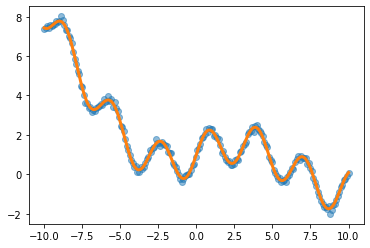
(예시2)
df=pd.read_csv('https://raw.githubusercontent.com/guebin/DL2022/master/posts/2022-10-04-dnnex0.csv')
df| x | underlying | y | |
|---|---|---|---|
| 0 | -1.000000 | 0.000045 | 0.0 |
| 1 | -0.998999 | 0.000046 | 0.0 |
| 2 | -0.997999 | 0.000047 | 0.0 |
| 3 | -0.996998 | 0.000047 | 0.0 |
| 4 | -0.995998 | 0.000048 | 0.0 |
| ... | ... | ... | ... |
| 1995 | 0.995998 | 0.505002 | 0.0 |
| 1996 | 0.996998 | 0.503752 | 0.0 |
| 1997 | 0.997999 | 0.502501 | 0.0 |
| 1998 | 0.998999 | 0.501251 | 1.0 |
| 1999 | 1.000000 | 0.500000 | 1.0 |
2000 rows × 3 columns
x = torch.tensor(df.x).reshape(-1,1).float()
y = torch.tensor(df.y).reshape(-1,1).float()
plt.plot(x,y,'o',alpha=0.1)
plt.plot(df.x,df.underlying,lw=3)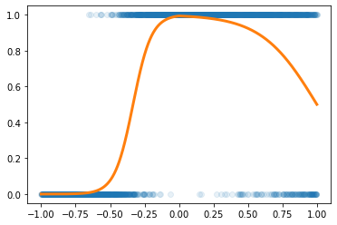
CPU vs GPU
- 파이토치에서 GPU를 쓰는 방법을 알아보자. (사실 지금까지 우리는 CPU만 쓰고 있었음)
GPU 사용방법
- cpu 연산이 가능한 메모리에 데이터 저장
- gpu 연산이 가능한 메모리에 데이터 저장
- cpu 혹은 gpu 연산이 가능한 메모리에 저장된 값들을 확인
(tensor([[0.0000],
[0.1000],
[0.2000]]),
tensor([[0.0000],
[0.2000],
[0.4000]]),
Parameter containing:
tensor([[-0.3467]], requires_grad=True),
Parameter containing:
tensor([-0.8470], requires_grad=True))(tensor([[0.0000],
[0.1000],
[0.2000]], device='cuda:0'),
tensor([[0.0000],
[0.2000],
[0.4000]], device='cuda:0'),
Parameter containing:
tensor([[-0.3467]], device='cuda:0', requires_grad=True),
Parameter containing:
tensor([-0.8470], device='cuda:0', requires_grad=True))- gpu는 gpu끼리 연산가능하고 cpu는 cpu끼리 연산가능함
(예시1)
(예시2)
(예시3)
RuntimeError: Expected all tensors to be on the same device, but found at least two devices, cpu and cuda:0! (when checking argument for argument mat1 in method wrapper_addmm)(예시4)
RuntimeError: Expected all tensors to be on the same device, but found at least two devices, cuda:0 and cpu! (when checking argument for argument mat1 in method wrapper_addmm)(예시5)
(예시6)
(예시7)
RuntimeError: Expected all tensors to be on the same device, but found at least two devices, cuda:0 and cpu!(예시8)
시간측정 (예비학습)
CPU (512)
- 데이터준비
- for문 준비
- for문 + 학습시간측정
GPU (512)
- 데이터준비
- for문돌릴준비
- for문 + 학습시간측정
t1= time.time()
for epoc in range(1000):
## 1
yhat = net(x)
## 2
loss = loss_fn(yhat,y)
## 3
loss.backward()
## 4
optimizr.step()
optimizr.zero_grad()
t2 = time.time()
t2-t10.5184829235076904- !! CPU가 더 빠르다?
CPU vs GPU (20480)
- CPU (20480)
torch.manual_seed(5)
x=torch.linspace(0,1,100).reshape(-1,1)
y=torch.randn(100).reshape(-1,1)*0.01
net = torch.nn.Sequential(
torch.nn.Linear(1,20480),
torch.nn.ReLU(),
torch.nn.Linear(20480,1)
)
loss_fn = torch.nn.MSELoss()
optimizr = torch.optim.Adam(net.parameters())
t1= time.time()
for epoc in range(1000):
## 1
yhat = net(x)
## 2
loss = loss_fn(yhat,y)
## 3
loss.backward()
## 4
optimizr.step()
optimizr.zero_grad()
t2 = time.time()
t2-t12.642850875854492- GPU (20480)
torch.manual_seed(5)
x=torch.linspace(0,1,100).reshape(-1,1).to("cuda:0")
y=(torch.randn(100).reshape(-1,1)*0.01).to("cuda:0")
net = torch.nn.Sequential(
torch.nn.Linear(1,20480),
torch.nn.ReLU(),
torch.nn.Linear(20480,1)
).to("cuda:0")
loss_fn = torch.nn.MSELoss()
optimizr = torch.optim.Adam(net.parameters())
t1= time.time()
for epoc in range(1000):
## 1
yhat = net(x)
## 2
loss = loss_fn(yhat,y)
## 3
loss.backward()
## 4
optimizr.step()
optimizr.zero_grad()
t2 = time.time()
t2-t10.5183775424957275- 왜 이런 차이가 나는가? 연산을 하는 주체는 코어인데 CPU는 수는 적지만 일을 잘하는 코어들을 가지고 있고 GPU는 일은 못하지만 다수의 코어를 가지고 있기 때문
CPU vs GPU (204800)
- CPU (204800)
torch.manual_seed(5)
x=torch.linspace(0,1,100).reshape(-1,1)
y=torch.randn(100).reshape(-1,1)*0.01
net = torch.nn.Sequential(
torch.nn.Linear(1,204800),
torch.nn.ReLU(),
torch.nn.Linear(204800,1)
)
loss_fn = torch.nn.MSELoss()
optimizr = torch.optim.Adam(net.parameters())
t1= time.time()
for epoc in range(1000):
## 1
yhat = net(x)
## 2
loss = loss_fn(yhat,y)
## 3
loss.backward()
## 4
optimizr.step()
optimizr.zero_grad()
t2 = time.time()
t2-t159.693639039993286- GPU (204800)
torch.manual_seed(5)
x=torch.linspace(0,1,100).reshape(-1,1).to("cuda:0")
y=(torch.randn(100).reshape(-1,1)*0.01).to("cuda:0")
net = torch.nn.Sequential(
torch.nn.Linear(1,204800),
torch.nn.ReLU(),
torch.nn.Linear(204800,1)
).to("cuda:0")
loss_fn = torch.nn.MSELoss()
optimizr = torch.optim.Adam(net.parameters())
t1= time.time()
for epoc in range(1000):
## 1
yhat = net(x)
## 2
loss = loss_fn(yhat,y)
## 3
loss.backward()
## 4
optimizr.step()
optimizr.zero_grad()
t2 = time.time()
t2-t11.3976879119873047확률적경사하강법, 배치, 에폭
좀 이상하지 않아요?
- 우리가 쓰는 GPU: 다나와 PC견적
- GPU 메모리 끽해봐야 24GB
- 우리가 분석하는 데이터: 빅데이터..?
- 데이터의 크기가 커지는순간 X.to("cuda:0"), y.to("cuda:0") 쓰면 난리나겠는걸?
- 데이터를 100개중에 1개만 꼴로만 쓰면 어떨까?
- 대충 이거만 가지고 적합해도 충분히 정확할것 같은데
X,y 데이터를 굳이 모두 GPU에 넘겨야 하는가?
- 데이터셋을 짝홀로 나누어서 번갈아가면서 GPU에 올렸다 내렸다하면 안되나?
- 아래의 알고리즘을 생각해보자.
- 데이터를 반으로 나눈다.
- 짝수obs의 x,y 그리고 net의 모든 파라메터를 GPU에 올린다.
- yhat, loss, grad, update 수행
- 짝수obs의 x,y를 GPU메모리에서 내린다. 그리고 홀수obs의 x,y를 GPU메모리에 올린다.
- yhat, loss, grad, update 수행
- 홀수obs의 x,y를 GPU메모리에서 내린다. 그리고 짝수obs의 x,y를 GPU메모리에 올린다.
- 반복
경사하강법, 확률적경사하강법, 미니배치 경사하강법
10개의 샘플이 있다고 가정. \(\{(x_i,y_i)\}_{i=1}^{10}\)
- ver1: 모든 샘플을 이용하여 slope 계산
(epoch1) \(loss=\sum_{i=1}^{10}(y_i-\beta_0-\beta_1x_i)^2 \to slope \to update\)
(epoch2) \(loss=\sum_{i=1}^{10}(y_i-\beta_0-\beta_1x_i)^2 \to slope \to update\)
…
- ver2: 하나의 샘플만을 이용하여 slope 계산
(epoch1) - \(loss=(y_1-\beta_0-\beta_1x_1)^2 \to slope \to update\) - \(loss=(y_2-\beta_0-\beta_1x_2)^2 \to slope \to update\) - … - \(loss=(y_{10}-\beta_0-\beta_1x_{10})^2 \to slope \to update\)
(epoch2) - \(loss=(y_1-\beta_0-\beta_1x_1)^2 \to slope \to update\) - \(loss=(y_2-\beta_0-\beta_1x_2)^2 \to slope \to update\) - … - \(loss=(y_{10}-\beta_0-\beta_1x_{10})^2 \to slope \to update\)
…
- ver3: \(m (\leq n)\) 개의 샘플을 이용하여 slope 계산
\(m=3\)이라고 하자.
(epoch1) - \(loss=\sum_{i=1}^{3}(y_i-\beta_0-\beta_1x_i)^2 \to slope \to update\) - \(loss=\sum_{i=4}^{6}(y_i-\beta_0-\beta_1x_i)^2 \to slope \to update\) - \(loss=\sum_{i=7}^{9}(y_i-\beta_0-\beta_1x_i)^2 \to slope \to update\) - \(loss=(y_{10}-\beta_0-\beta_1x_{10})^2 \to slope \to update\)
(epoch2) - \(loss=\sum_{i=1}^{3}(y_i-\beta_0-\beta_1x_i)^2 \to slope \to update\) - \(loss=\sum_{i=4}^{6}(y_i-\beta_0-\beta_1x_i)^2 \to slope \to update\) - \(loss=\sum_{i=7}^{9}(y_i-\beta_0-\beta_1x_i)^2 \to slope \to update\) - \(loss=(y_{10}-\beta_0-\beta_1x_{10})^2 \to slope \to update\)
…
용어의 정리
옛날
- ver1: gradient descent, batch gradient descent
- ver2: stochastic gradient descent
- ver3: mini-batch gradient descent, mini-batch stochastic gradient descent
요즘
- ver1: gradient descent
- ver2: stochastic gradient descent with batch size = 1
- ver3: stochastic gradient descent - https://www.deeplearningbook.org/contents/optimization.html, 알고리즘 8-1 참고.
ds, dl
- ds
<torch.utils.data.dataset.TensorDataset at 0x7f0788b59c50>(tensor([0., 1., 2., 3., 4., 5., 6., 7., 8., 9.]),
tensor([1., 1., 1., 1., 1., 0., 0., 0., 0., 0.]))- dl
ds, dl을 이용한 MNIST 구현
- 데이터정리
- ds \(\to\) dl
- 미니배치 안쓰는 학습
- 미니배치 쓰는 학습 (GPU 올리고 내리는 과정은 생략)
오버피팅
- 오버피팅이란? - 위키: In mathematical modeling, overfitting is “the production of an analysis that corresponds too closely or exactly to a particular set of data, and may therefore fail to fit to additional data or predict future observations reliably”. - 제 개념: 데이터를 “데이터 = 언더라잉 + 오차”라고 생각할때 우리가 데이터로부터 적합할 것은 언더라잉인데 오차항을 적합하고 있는 현상.
오버피팅 예시
- \(m\)이 매우 클때 아래의 네트워크 거의 무엇이든 맞출 수 있다고 보면 된다.
- \(\underset{(n,1)}{\bf X} \overset{l_1}{\to} \underset{(n,m)}{\boldsymbol u^{(1)}} \overset{h}{\to} \underset{(n,m)}{\boldsymbol v^{(1)}} \overset{l_2}{\to} \underset{(n,1)}{\hat{\boldsymbol y}}\)
- \(\underset{(n,1)}{\bf X} \overset{l_1}{\to} \underset{(n,m)}{\boldsymbol u^{(1)}} \overset{sig}{\to} \underset{(n,m)}{\boldsymbol v^{(1)}} \overset{l_2}{\to} \underset{(n,1)}{\hat{\boldsymbol y}}\)
- \(\underset{(n,1)}{\bf X} \overset{l_1}{\to} \underset{(n,m)}{\boldsymbol u^{(1)}} \overset{relu}{\to} \underset{(n,m)}{\boldsymbol v^{(1)}} \overset{l_2}{\to} \underset{(n,1)}{\hat{\boldsymbol y}}\)
- 그런데 종종 맞추지 말아야 할 것들도 맞춘다.
model: \(y_i = (0\times x_i) + \epsilon_i\), where \(\epsilon_i \sim N(0,0.01^2)\)
torch.manual_seed(5)
x=torch.linspace(0,1,100).reshape(100,1)
y=torch.randn(100).reshape(100,1)*0.01
plt.plot(x,y)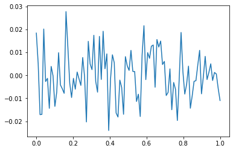
- y는 그냥 정규분포에서 생성한 오차이므로 \(X \to y\) 로 항햐는 규칙따위는 없음
torch.manual_seed(1)
net=torch.nn.Sequential(
torch.nn.Linear(in_features=1,out_features=512),
torch.nn.ReLU(),
torch.nn.Linear(in_features=512,out_features=1))
optimizr= torch.optim.Adam(net.parameters())
loss_fn= torch.nn.MSELoss()
for epoc in range(1000):
## 1
yhat=net(x)
## 2
loss=loss_fn(yhat,y)
## 3
loss.backward()
## 4
optimizr.step()
net.zero_grad() 
- 우리는 데이터를 랜덤에서 뽑았는데, 데이터의 추세를 따라간다 \(\to\) 오버피팅 (underlying이 아니라 오차항을 따라가고 있음)
오버피팅이라는 뚜렷한 증거! (train / test)
- 데이터의 분리하여 보자.
torch.manual_seed(5)
x=torch.linspace(0,1,100).reshape(100,1)
y=torch.randn(100).reshape(100,1)*0.01
xtr = x[:80]
ytr = y[:80]
xtest = x[80:]
ytest = y[80:]
plt.plot(xtr,ytr)
plt.plot(xtest,ytest)
plt.title('train: blue / test: orange');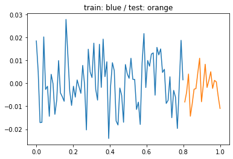
- train만 학습
torch.manual_seed(1)
net=torch.nn.Sequential(
torch.nn.Linear(in_features=1,out_features=512),
torch.nn.ReLU(),
torch.nn.Linear(in_features=512,out_features=1))
optimizr= torch.optim.Adam(net.parameters())
loss_fn= torch.nn.MSELoss()
for epoc in range(1000):
## 1
# net(xtr)
## 2
loss=loss_fn(net(xtr),ytr)
## 3
loss.backward()
## 4
optimizr.step()
optimizr.zero_grad() - training data로 학습한 net를 training data 에 적용
- train에서는 잘 맞추는듯이 보인다.
- training data로 학습한 net를 test data 에 적용
plt.plot(x,y,alpha=0.5)
plt.plot(xtr,net(xtr).data,'--') # prediction (train)
plt.plot(xtest,net(xtest).data,'--') # prediction with unseen data (test) 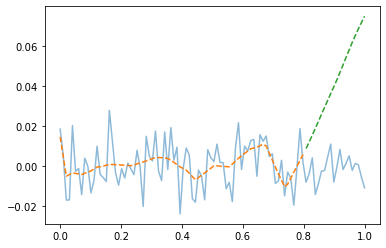
- train은 그럭저럭 따라가지만 test에서는 엉망이다. \(\to\) overfit